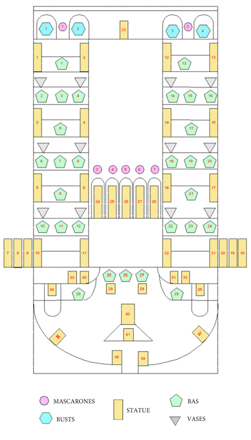

Lu's Animated Gif／西方見聞錄
Fountains & Statues in Peter the Great's Summer Palace
俄羅斯彼得夏宮的噴泉與雕像
Copyright © 2014-15 drcflu, All rights reserved
以下動畫由於檔案較大、恕請耐心等候
Some of the files are quite big, please be patient...
由中央至右: 人魚怪、潘杜拉／From the centre to right: Tritons, Pandora

人魚怪／Tritons

前排左起: 阿克鐵龍、信使神／Front Row (left to right): Actaeon, Mercury

由左至右: 牧童詹尼梅、阿克鐵龍、擲鐵餅者、信使神
Left to right: Genymede, Actaeon, Discus thrower, Mercury

彼得夏宮正面／Front view of Peter the Great's Summer Palace

參孫、水精１、海妖、水精２／Samson, Naiad１, Siren, Naiad２

大力士參孫鬥獅子／Samson
S
萬水齊發的彼得夏宮／Peter the Great's Summer Palace, The-Great Cascade

前排左起: 愛瑪遜、主神、花神／Front Row (left to right): Amazon, Jupiter, Flora
_Amazon_Jupiter_Flora.gif)
前排左起花神、鬥士／Front Row (left to right): Flora, Fighter
_Flora_Fighter.gif)
大力士參孫鬥獅子／Samson

由左至右:維納斯、宙斯、愛瑪遜／Left to right: Venus, Jupiter, Amazon

前排左起穀類女神、佛羅倫斯牧神／Front Row (left to right)Cere, Florence Faun

下花園／Lower Park

http://www.peterhof-express.com/about_peterhof/great_cascade_peterhof/scheme/
彼得夏宮雕像配置圖
|
 |
Statues: 黃底紅字部份為雕像位置 雕像後面的人名是作者 有中文翻譯者係本網頁中出現者
2-Pandora, F. Shubin, 潘杜拉 3- Ceres; 股類女神 4- Capitoline Faun; 5-Florence Fawn, 佛羅倫斯牧神 6-Venus Kallipygos , 維納斯 7- Belvedere Meleager, 8-Bacchus and Satire ; 9 -Amazon, 艾瑪遜 10 - Jupiter, 主神 11 Capitoline Flora; 花神 12 -Acis, 13 , Juno; 14 - Faun , 15 - Galatea; 16 - Venus de'Medici ; 17 - Capitoline Mercury; 信使神 18 - Capitoline Antinous ; 19 - Germanicus , 20 -Discus thrower , 擲鐵餅者 21 - Acteon, 阿克鐵龍 22 -Ganymede, 牧童詹尼煤 23 - Tritons , 人魚怪 24- Pan and Olympus; 25 -Venus Kallipygos; 26 - Barberini Faun , 27- Bacchus, 28 - Cupid and Psyche; 29 - Shell Fountains; 30.31 - Borghese Fighters ; 鬥士 32.33 -Frog Unknown master early XVIII century (reconstructed Gunnius A.) 34 -Allegory of the Neva, 35 -Allegory of the Volkhov. 36-37 Sirens, 海妖 38.39 , Naiads with the Triton, 水精與人魚怪 40 Samson Tearing Open the Jaws of the Lion, 大力士參孫鬥獅子 41 Lion head * Copy-from the ancient original |
|
|
|
|
|